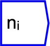
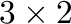

Next: Shape
Up: Tensor operations
Previous: Slice
Contents

The operator can be placed on the canvas in two ways:
- From the Tensor Operations (``tensor'') toolbar
 ;
or
;
or
- By typing the letters ``size'' on the canvas and then pressing the
Enter key.
Size refers to the number of elements along a named dimension given
by the operation axisargument--eg a  rank 2 tensor with
named axes ``0'' and ``1'', size(``1'')==2.
If the axis argument is left blank, the size returns the total number
of elements present in the tensor. This may be less than the product
of axis sizes if the data is sparse--which will normally be the
case.